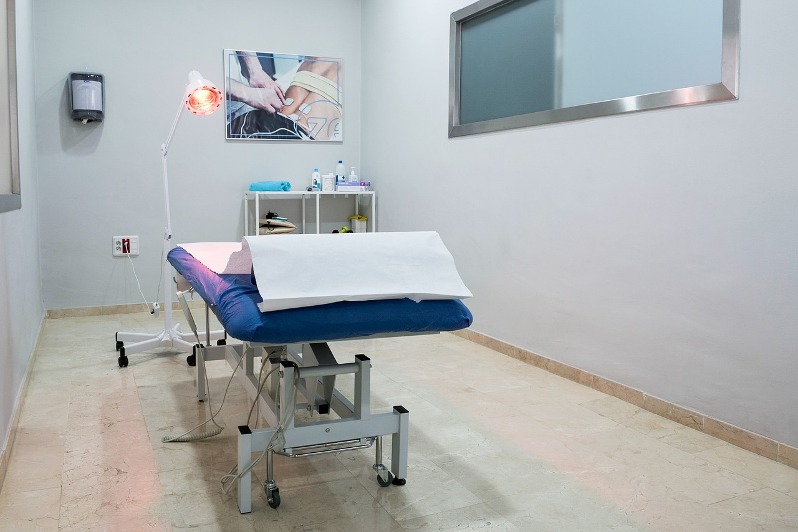

Any abnormality in the function of the feet can have consequences such as plantar fasciitis, Achilles tendinitis, bunions, inflammation and falling performance within sports practice or day-to-day activities. For this, our physiotherapists can indicate the use of orthotics, spacers, and other equipment developed to aid recovery and optimize the clinical evolution of the client.
Back rolls are part of the rehabilitation process for spinal injuries. Especially for people who spend many hours working in front of computers or sitting during the work day, the lumbar roller is an important tool to maintain treatment gains even during work, making the recovery process optimized and risk of further injury is reduced.
Braces are part of the arsenal of equipment that can be indicated to our customers. For those who have had surgeries recently, or for those who are in treatment of instability, ruptured ligaments, and need a support to stabilize the joint, the use of braces becomes an important tool for achieving greater stability and safety for the patients.
Sticks, balls, and foam roller are useful equipment that can be indicated to make an active-release of the muscles and to aid in mobility and muscle relaxation. The advantage of these equipment is that our customers can maintain their earnings at home, following the guidelines of our professionals.
These equipments are commonly used during training sessions with the Pilates method or during physical therapy sessions. Our clients can continue their training at home using the same equipment they use at the clinic. Reload believes that the client is a key player during recovery and our style of treatment emphasizes the continuation of their workouts at home.
